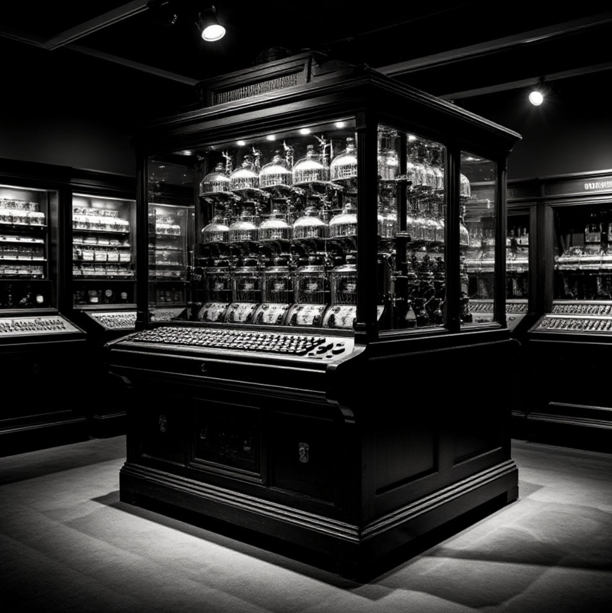
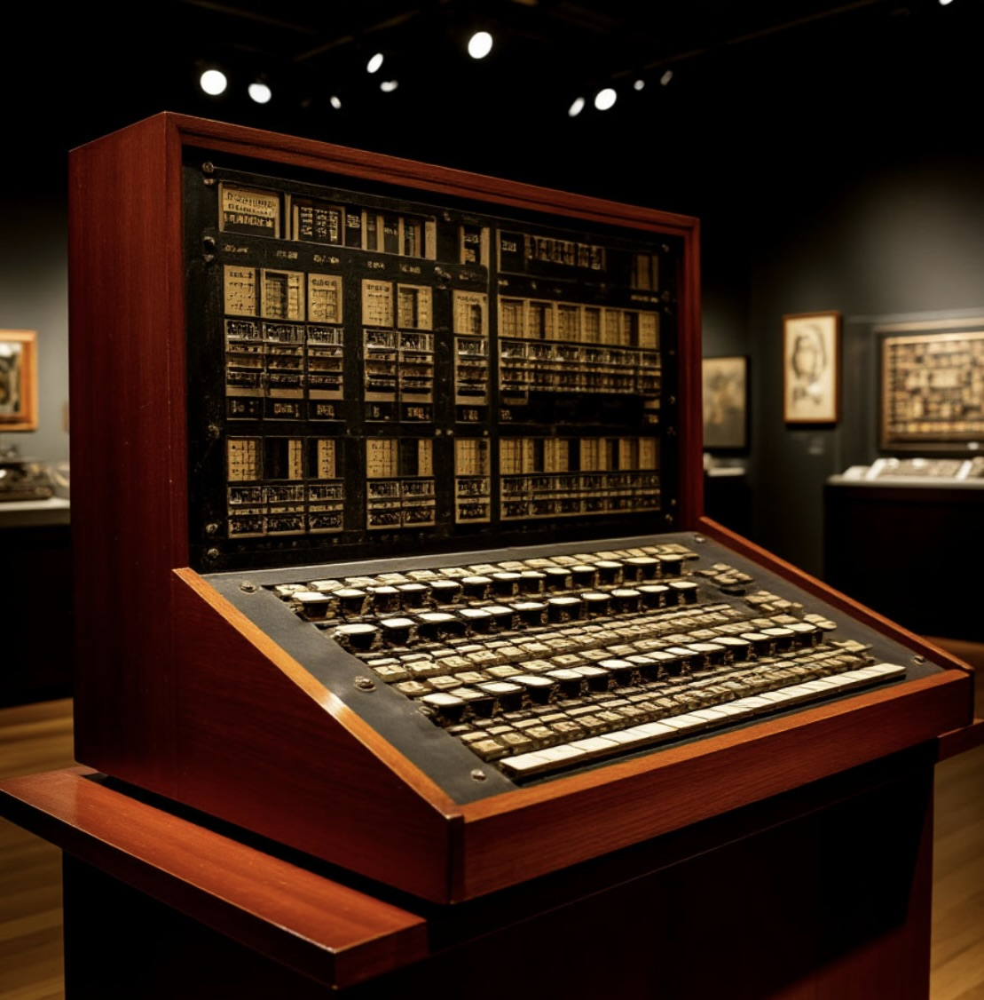
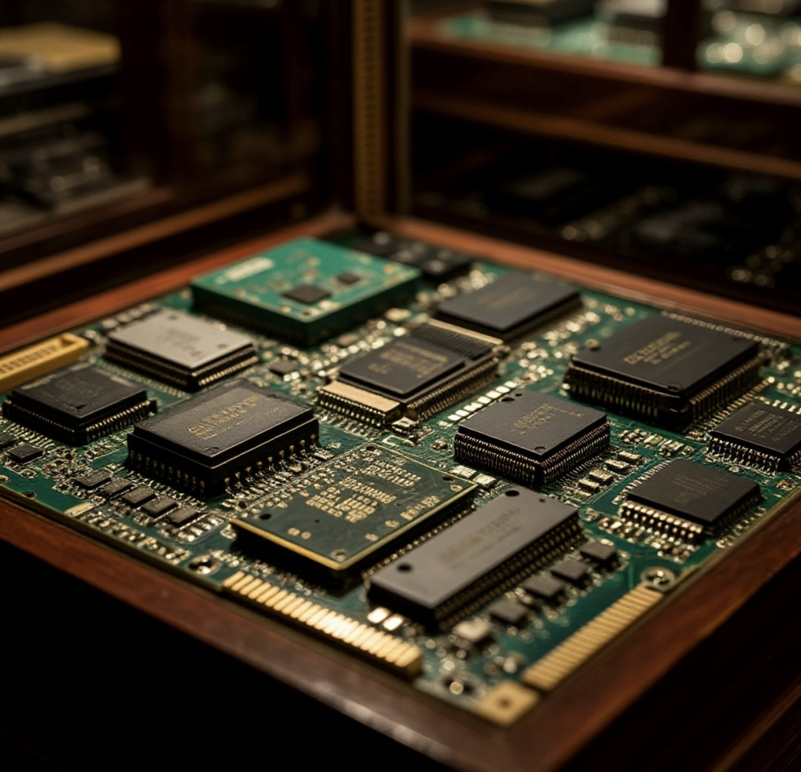
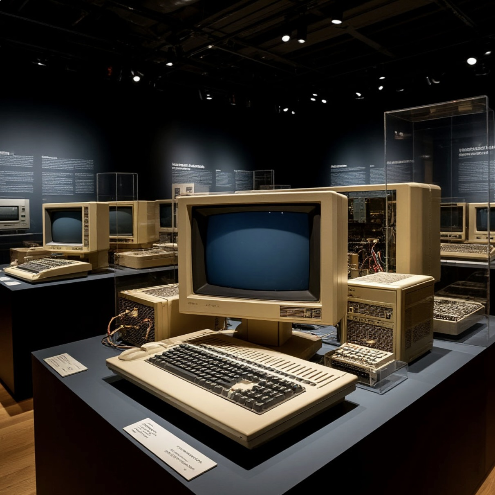

First Generation — Vacuum Tubes
Years: 1940s – 1950s
Main Technology: Vacuum tubes
Characteristics: Massive installations, high energy consumption, frequent hardware failures.

Exhibition of early vacuum tube computing machines
Exhibit: ENIAC
Name: ENIAC (Electronic Numerical Integrator and Computer)
Year: 1945
Generation: First
Technology: Vacuum tubes
Purpose: Artillery firing tables calculation.
Fun Fact: It weighed 30 tons and occupied an entire hall.
ENIAC was one of the earliest general-purpose electronic computers. It used thousands of vacuum tubes and laid the foundation for modern digital computing.
Second Generation — Transistors
Years: 1950s – 1960s
Main Technology: Transistors
Characteristics: Reduced size, increased reliability, lower energy consumption.

Second-generation transistor mainframe
Exhibit: IBM 7090
Name: IBM 7090
Year: 1959
Generation: Second
Technology: Transistors
Purpose: Scientific and governmental research.
Fun Fact: Used by NASA to support space programs.
Replacing fragile vacuum tubes with solid-state transistors revolutionized computer architecture, making systems significantly faster and more stable.
Third Generation — Integrated Circuits
Years: 1960s – 1970s
Main Technology: Integrated Circuits (ICs)
Characteristics: Miniaturization of components, silicon chips, commercial availability.

Early integrated circuits and silicon chips
Exhibit: IBM System/360
Name: IBM System/360
Year: 1964
Generation: Third
Technology: Integrated Circuits
Purpose: Universal business and scientific computing.
Fun Fact: Established compatibility across different computer models.
Integrated circuits allowed developers to pack thousands of components onto a tiny silicon wafer, bridging the gap between massive mainframes and smaller business systems.
Fourth Generation — Microprocessors and PCs
Years: 1970s – Present
Main Technology: Microprocessors
Characteristics: Central Processing Unit on a single chip, emergence of personal computers.

The era of personal home computers
Exhibit: Apple II
Name: Apple II
Year: 1977
Generation: Fourth
Technology: Microprocessor
Purpose: Home computing and education.
Fun Fact: Featured built-in graphics and keyboard design.
The microchip brought computers out of secure research facilities and directly into homes, completely altering daily human routines and work culture.
Fifth Generation — Artificial Intelligence
Years: Present – Future
Main Technology: AI & Neural Networks
Characteristics: Parallel processing, cognitive computing, cloud connectivity.
Conceptual representation of modern neural networks
Exhibit: Modern AI Systems
Name: Generative AI & Neural Processors
Year: 2020s
Generation: Fifth
Technology: Deep Learning / Quantum-ready
Purpose: Autonomous text generation, data analysis, visual processing.
Fun Fact: Modern smartphones outperform old laboratory supercomputers.
Artificial intelligence transforms hardware from simple calculators into autonomous thinking assistants capable of natural language processing and creative tasks.
Development Timeline
Interactive Museum Quiz
Test your knowledge about computing history!
Interesting Facts
- 💡 Early computers occupied entire floors of buildings and required teams of engineers.
- 💡 The term "debugging" originated from a real moth stuck in a computer relay.
- 💡 The processing power of a modern smartwatch is higher than the Apollo spacecraft's onboard computer.
- 💡 The invention of the silicon chip reduced component sizes by millions of times.
Future of Computing (2050)
By 2050, computing systems will become an invisible part of the environment. Quantum computers will solve problems in seconds that currently take years. Brain-computer neural interfaces will allow information to be controlled by the power of thought, completely changing the familiar format of human-technology interaction.
References
- 📖 Computer History Museum (Official Archive) — historical data on computer generations and architecture.
- 📖 Encyclopædia Britannica (History of Computing) — technical specifications of ENIAC and IBM.
- 📖 IEEE Spectrum — materials on the development of microprocessors and quantum computing.